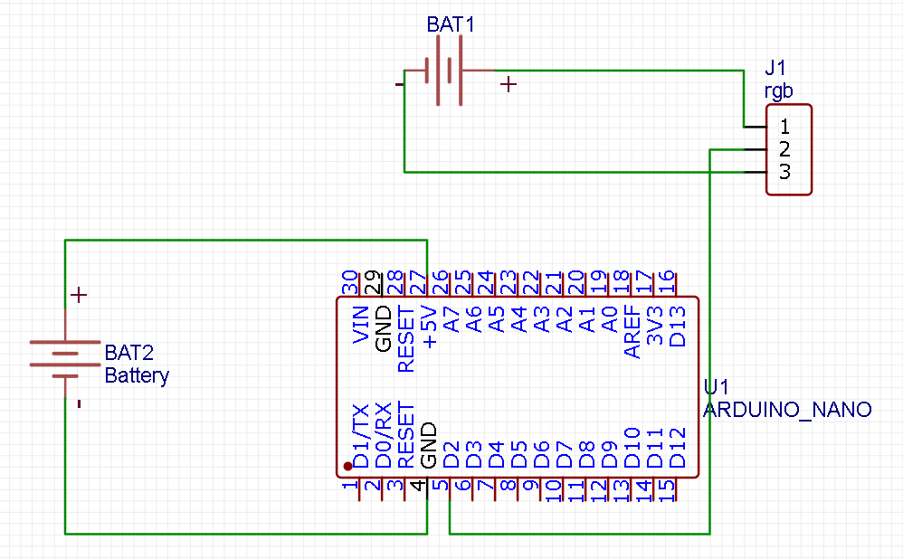

rgb лента
Для создания rgb ленты понадобится:
- Arduino nano
- rgb лента
- внешний блок питания на 5 вольт для ргб ленты
- батарейка питания
Принцип работы
Принцип работы заключается втом что в программе создаётся массив цветов, каждый элемент которого адресуется отдельному светодиоду
Схема подключения:
Прогромирование
Для прогромирования понадобится библиотека FastLed для работы с ргб лентами.
Код с пояснениями:
#define NUM_LEDS XX //кол-во светодиодов в ленте
#include "FastLED.h"
#define PIN 2 //пин ленты
CRGB leds[NUM_LEDS];
byte counter;
void setup() {
FastLED.addLeds(leds, NUM_LEDS).setCorrection( TypicalLEDStrip );
FastLED.setBrightness(50);
pinMode(2, OUTPUT);
}
void loop() {
for (int i = 0; i < NUM_LEDS; i++ ) { // от 0 до первой трети
leds[i] = CHSV(counter + i * 2, 255, 255); // HSV. Увеличивать HUE (цвет)
// умножение i уменьшает шаг радуги
}
counter++; // counter меняется от 0 до 255 (тип данных byte)
FastLED.show();
delay(5); // скорость движения радуги
}